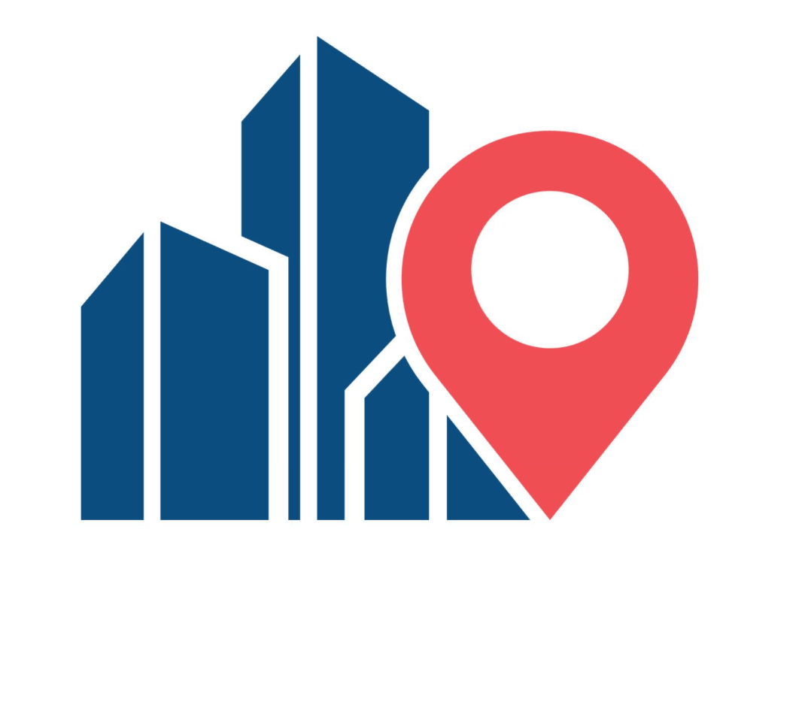

Deep Teal
#0B4F6C
This color will be used for the header, footer, headings, and important visual elements.

Website Planning Document
Milan Explorer
I chose this name because it clearly communicates that the website helps visitors explore interesting places in Milan, Italy. The name is short, memorable, and appropriate for a travel guide focused on the city's attractions, museums, parks, and neighborhoods.
Optional domain: milanexplorer.org
Milan Explorer will help visitors discover notable places and attractions in Milan, Italy. The website will provide short descriptions of landmarks, museums, parks, and neighborhoods.
It will also include photographs, category filters, practical information, and a contact page. A JavaScript feature will allow users to save and manage their favorite attractions.
#0B4F6C
This color will be used for the header, footer, headings, and important visual elements.
#F4E9D8
This color will be used for the page background and soft section backgrounds.
#C84F35
This color will be used for buttons, links, icons, and decorative accents.
Poppins will be used for the site title, headings, navigation, and buttons.
Open Sans will be used for paragraphs, lists, labels, and general body content.
These wireframes show the planned layout of the home page for mobile and desktop views.